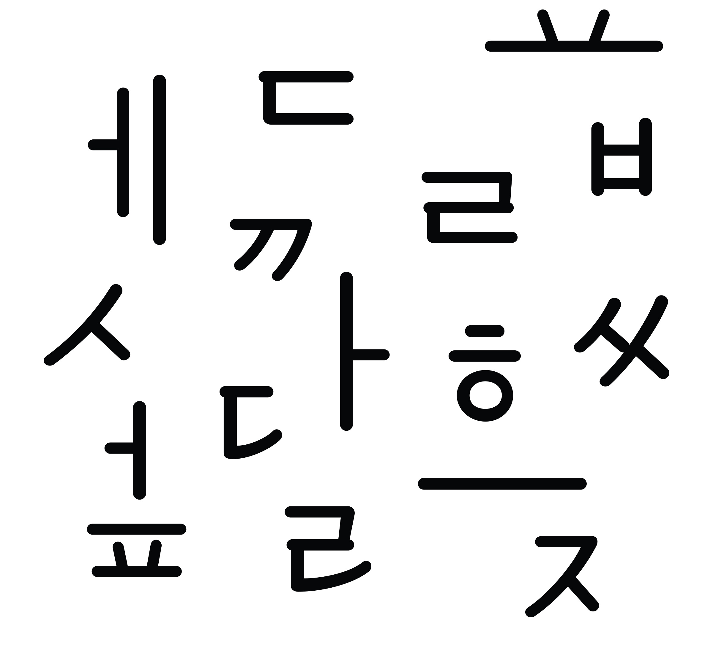

유단
〈유단〉은 1949년 『충청매일』에 사용된 세로쓰기 활자, 「박경서체」를 토대로 한 가로쓰기 본문용 글자체다.
뼈대인 「박경서체」를 가로쓰기에 적합하도록 높낮이와 너비를 수정하였다. 붓의 흔적을 제거하고 결구를 통한 표현을 추가하였으나 공간 배분과 가로・세로 비율은 유지하여 원전의 미감을 살렸다. 〈유단〉은 획의 표현보다는 공간과 구조에 집중해 구조에서는 단단함을, 비율과 획에서는 부드러움과 순함을 느낄 수 있다.
〈유단〉은 기억에 남을 첫 결과물인 만큼 앞으로 가지고 나가고 싶은 마음가짐을 생각하며 기획・제작하였다. 글자체 이름 〈유단〉은 평소 추구하는 겉으로는 부드럽고 순하게 보이나 속은 곧고 굳센 외유내강의 의미를 담아 지었다.
권장 사용 크기는 12~14pt이며 자기 생각이나 의견을 전하는 글에 사용되었으면 한다.
송인우
송인우는 시각디자인을 전공하고 앞으로 어떤 방향으로 나아가야 할지 알아보고 있다. 글자에 관심이 생긴 것이 오래되지 않아 부족하지만 〈유단〉을 그리는 과정에서 많이 배우고 경험하고 있다. 빠르지 않더라도 멈추지 않고 작업하여 다양한 글자를 그려보고 싶다.